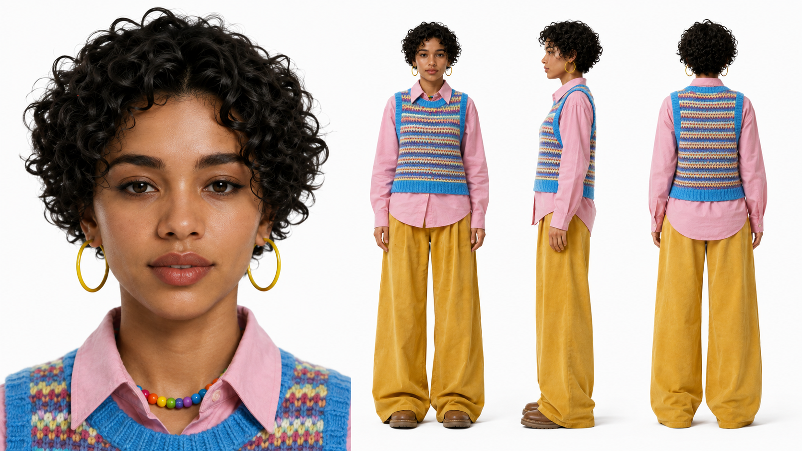
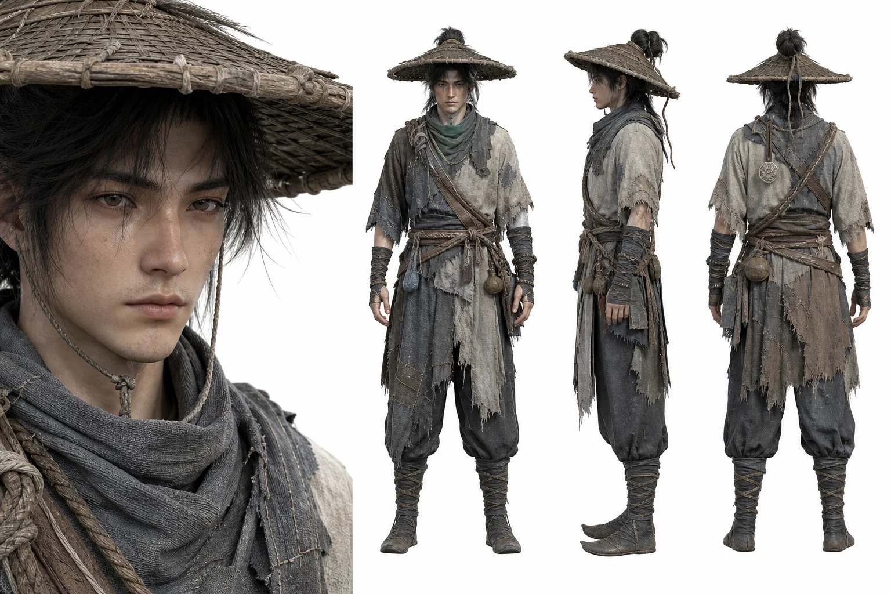
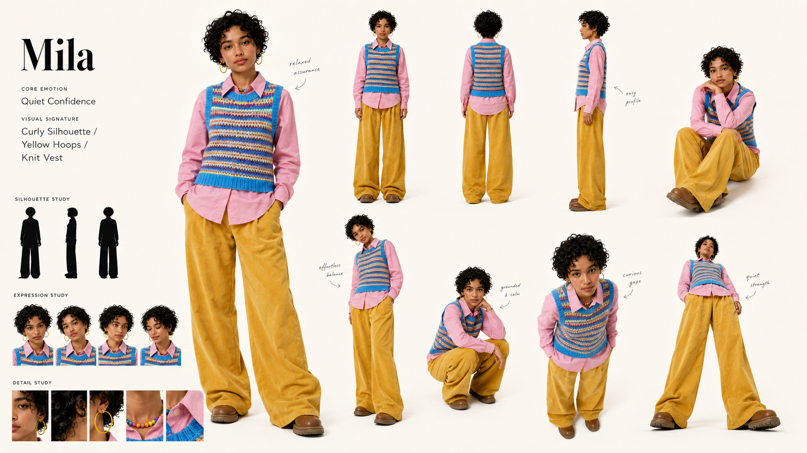
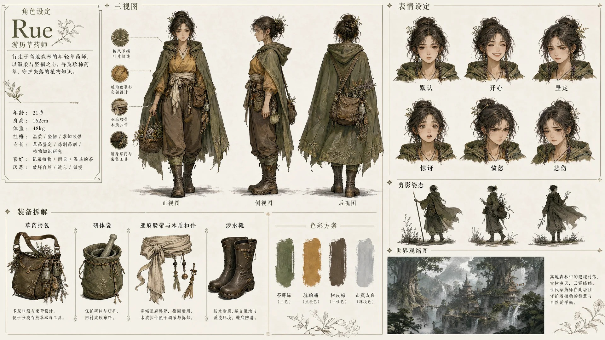
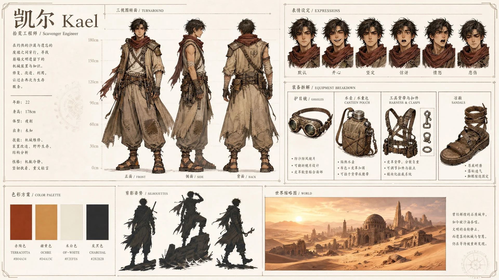
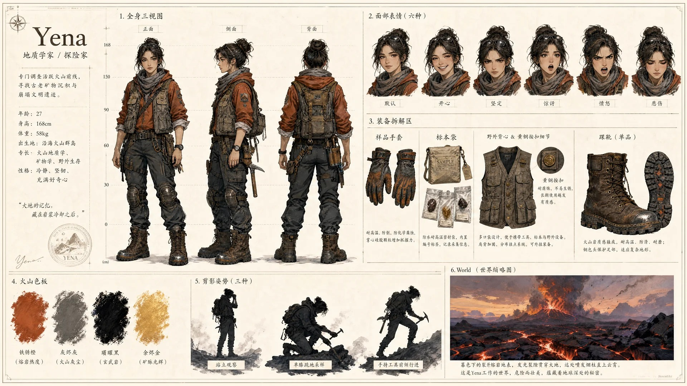

01 / WHY
人物资产不是一张“好看的人像”
真正可生产的人物资产要让模型在不同角度、姿势和镜头中仍然认得同一个人。
建议交付物
- 人物三视图：正面、侧面、背面与面部特写
- 角色身份板：姿势、轮廓、表情与细节
- 完整 Character Sheet：装备拆解、配色、世界缩略图
- 一张经过检查的标准主参考图
02 / TURNAROUND
人物三视图
把角色身份锁定成后续所有镜头的共同参考。


人物三视图 Prompt
生成一张高完成度的人物资产板。左侧 1/3 为超大高清面部正视特写，右侧 2/3 整齐排布同一角色的正面、侧面与背面三张全身站姿视图。 【角色描述】填写年龄、身份、体态、脸型、五官、发型、服装、配饰与核心气质。 所有视角必须保持同一面部比例、发型、服装、身体比例与角色身份。纯白或柔和米白背景，干净极简，无环境、无道具、无水印。柔和漫射光，清晰表现脸部、发型、服装轮廓、手部和全身比例。16:9，8K，写实或 UE5 + PBR 电影级质感。不要裁切面部，不要隐藏肢体，不要合并姿势，不要随机改变服装与人物身份。
03 / IDENTITY BOARD
角色身份板
在严格身份一致的基础上补充姿势、情绪、轮廓和可识别细节。

角色身份板 Prompt
创建一张艺术性的 16:9 角色身份板，主体使用参考角色，背景为纯白或柔和米白。不要创建标准网格角色表，而是高端动画工作室角色研究与艺术书布局的结合。 放置一个大型英雄全身视角作为视觉锚点，周围以清晰间距排列中性全身、背面、侧面、坐姿、倾斜姿势、蹲姿、俯视与仰视身体角度，以及富有表现力的肖像研究。所有图像不得重叠，不裁切面部或肢体。 在所有视角中保持严格身份一致：同一面部、发型、服装、身体比例、姿势语言与视觉个性。加入 2-3 个黑色轮廓、细微表情变化，以及面部、头发和服装的关键细节研究。文字仅保留名称、角色核心情绪和视觉标志。整体简约、电影感、高端、艺术书般、适用于 AI 后续生产。
04 / CHARACTER SHEET
角色设定图工作流
完整设定图适合在批量分镜与视频生产前作为稳定资产。



生成完整角色提示词
包含三视图、六种表情、装备拆解、配色条、剪影姿势与世界缩略图。
在 Image 2 生成
统一半写实水彩或项目指定风格，柔和打光，米白背景。
检查与打磨
使用 Image 2、NanoBanana Pro 与少量 Photoshop 修复身份漂移、手部与细节。